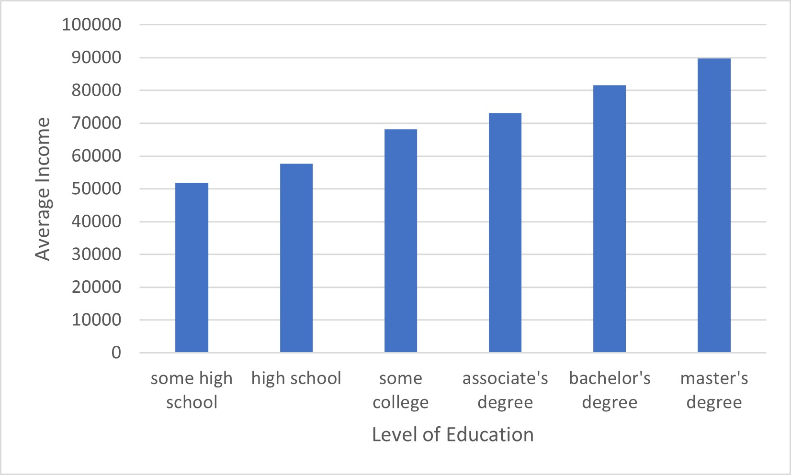
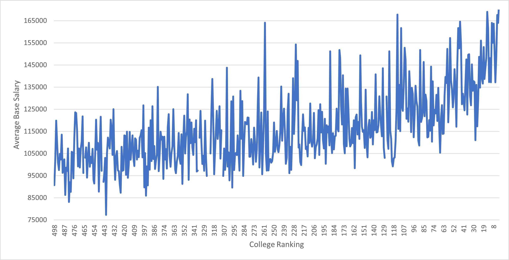

Data Tools
This module laid out the basis of storing data sets and utilizing them for statistical analysis or pattern recognition. The first portion explained the importance of file types and the standard of using comma-separated values in text files. The next section explained the utilization of CSV files in spreadsheet applications, specifically in calculating statistically significant values through isolating columns, rows, or specific data. The last section showed the value of identifying patterns utilizing charts or graphs, while also emphasizing the need for a strong statistical correlation before any relation between statistics can be considered a true correlation.
Big Data
This module taught me about the magnitude of data and where it comes from while also highlighting challenges that come with the storage and computation of that same data. The two main points that I gathered from this module are that large amounts of data can be hard to store and often need data centers dedicated to storage, and that networking between these computers can be used to help process that data in parallel rather than by one sole computer.
Bias in Machine Learning
This module highlighted the prevalence of bias in machine learning while explaining what machine learning is. It explained the differences between reinforcement machine learning, unsupervised machine learning, and supervised machine learning. It also detailed how neural networks are becoming popular, as an effective supervised learning method that evaluates data through training and layers. I was also taught that bias is introduced into machine learning largely by our own biases in data sets such as race or gender.
Unit Test
The unit test was very similar to the quizzes from each module, which made it seem relatively easy but still reinforced all the lessons prior. The slight changes in how these concepts were applied helped with this reinforcement while making the test more interesting. Overall the test felt more like a review than a test, but that may be because I took it right after finishing the learning modules.
Hypothesis
If someone has achieved a higher level of education or an education through better schools their income levels will also increase.
Process
I have found two data sets that relate to the topic I was interested in. One happened to have rankings of all top colleges in the United States and their median base salary. The other had parental income levels and their corresponding level of education. In both data sets there was a positive correlation between better education and higher average salary.

